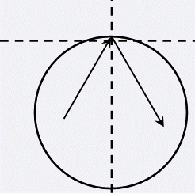

第一行包含三个实数，分别为x0, y0, R，即圆形器皿的圆心坐标及半径。第二行包含两个正整数N, k，分别
表示粒子的总数与消亡碰撞次数。接下来N行每行四个实数，分别为xi, yi, vxi , vyi，保证(xi, yi)都在圆内且
(vxi, vyi)非零。
阿Q博士正在观察一个圆形器皿中的粒子运动。不妨建立一个平面直角坐标系，圆形器皿的圆心坐标为(x0, y0
)，半径为R。器皿中有若干个粒子，假设第i个粒子在时刻0的位置为(xi, yi)，速度为(vxi,vyi)（注：这是一个
速度向量，若没有发生碰撞，t时刻的位置应该是(xi + t * vxi, yi + t * vyi) ）。假设所有粒子的运动互不干
扰；若某个粒子在某个时刻碰到了器皿壁，将发生完全弹性碰撞，即速度方向按照碰撞点的切线镜面反射，且速度
大小不变（如图）。认为碰撞是瞬间完成的。

尽管碰撞不会影响粒子的速率，但是粒子却会受到一定的伤害，所以若某一个粒子碰撞了k次器皿壁，那么在
第k次碰撞时它便会消亡。 出于研究的需要，阿Q博士希望知道从时刻0到所有粒子都消亡这段时间内，所有粒子之
间的最近距离是什么。你能帮助他么？
第一行包含三个实数，分别为x0, y0, R，即圆形器皿的圆心坐标及半径。第二行包含两个正整数N, k，分别
表示粒子的总数与消亡碰撞次数。接下来N行每行四个实数，分别为xi, yi, vxi , vyi，保证(xi, yi)都在圆内且
(vxi, vyi)非零。
仅包含一个实数，即所有粒子的历史最近距离，精确到小数点后三位。
0 0 10
2 10
0 -5 0 1
5 0 1 0
7.071对于所有的数据，2 ≤N ≤100。1≤k ≤100。 请注意实数精度问题。